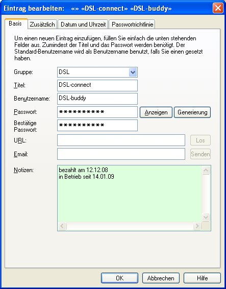
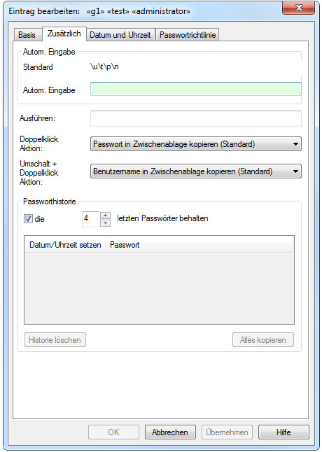
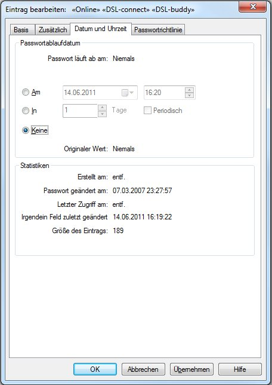
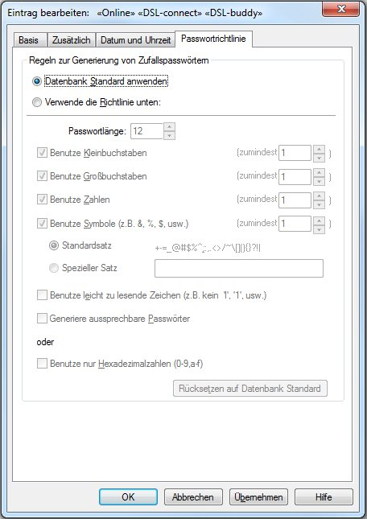

Die Eingabe von Benutzernamen, Passwörter und Gruppen, zusammen mit den dazugehörigen Parametern, erfolgt über mehrere Reiter:
Basis
Zusätzlich
Datum und Uhrzeit
Passwortrichtlinie
Die wichtigsten Elemente sind im Reiter Basis zusammengefasst.

Folgende Informationselemente gehören zu jedem Passworteintrag:
Gruppe: ein Name zum Zusammenfassen aller artverwandten Einträge
Titel: ein 'freundlicher' Name für den Passworteintrag
Benutzername: der eigentliche Benutzername
Passwort: das dazugehörige Passwort
Notizen: allgemeine Notizen zu diesem Eintrag
Nur das Titel- und das Passwortfeld sind Pflichtfelder. Alle anderen sind optional.
In diesem Reiter kann auch die URL eingestellt werden:
URL: Die URL die sich auf diesen Eintrag bezieht. Wenn dieses Feld nicht leer ist, dann ist die "Gehe zu" Option aktiviert.
Wenn kein Protokoll angegeben ist, wird "http://" angenommen (z.B. "www.foo.net" ist gleich mit "http://www.foo.net").
Der nachstehende Hinweis beschreibt die Funktionsweise in allen Einzelheiten.
Los: Vorausgesetzt das Feld URL ist nicht leer, bewirkt ein Drücken dieser Taste das der Browser zu der eingegebenen Adresse geht. Wenn Sie die Taste Los zusammen mit der Strg Taste drücken, wird nach dem Öffnen des Browsers auch die Autom.Eingabe ausgeführt.
Die nachfolgenden Hinweise beschreiben das Verhalten der URL-Eingabe genauer:
Standardmäßig wird Password Safe den Browser verwenden, welchen Ihr PC in der Regel zum öffnen von Internetseiten hernimmt. Wenn erwünscht, können Sie einen alternativen Browser angeben durch Angabe von '[alt]' in eckigen Klammern vor der URL, z.B. "[alt]http://www.foo.net". Dies ist nützlich, wenn der Standardbrowser Firefox ist, und Sie wünschen aber auf eine Seite zuzugreifen, die am besten mit dem Internet Explorer funktioniert. Den alternativen Browser können Sie konfigurieren im Dialogfenster Verwalten->Optionen->Verschiedenes.
Sie können auch eine Emailadresse wie z.B. mailto:josef@irgendwo.com für die URL festlegen. In diesem Falle würde die Standardmailanwendung aufgerufen werden mit der "Gehe zu" Aktion.
>Wenn '{alt}' in geschweiften Klammern vor der URL gesetzt wird, dann wird es 'wie-es-ist' dem alternativen Browser übergeben, ohne dass 'http://' hinzugefügt wird, wenn kein Protokoll definiert ist. Die ist dann sinnvoll, wenn der alternative Browser eine Anwendung mit Fernzugriff ist, z.B. ein SSH Client. [ssh] würde denselben Effekt haben.
Wenn '[autotype]' vor der URL steht, wird Password Safe nach der Anzeige und Aktivierung des Browsers die Funktion Autom.Eingabe ausführen. Wenn im Feld Autom.Eingabe nichts eingegeben ist, wird der standardmäßige Wert eingesetzt.
Reiter Zusätzlich

Autom. Eingabe: Wenn dieses Feld nicht leer ist, wird dessen Inhalt den standardmäßigen Inhalt für das 'automatische Eingeben' ersetzen. Für mehr Information, siehe Hilfe zu "Autom. Eingabe".
Ausführen: Wenn dieses Feld nicht leer ist, wird dessen Inhalt bei der Aktion 'Ausführen' als Kommando dem Betriebssystem übergeben. Es können Variablen mit übergeben werden. Für mehr Information, siehe Hilfe zu "Ausführen".
Doppelklick-Aktion:
Dies erlaubt es festzulegen welche Aktion Password Safe ausführt, wenn Sie ein Doppelklick auf diesem Eintrag ausführen. Standardmäßig wird die im Dialog Verwalten->Optionen->Verschiedenes festgelegte Aktion ausgeführt.
Passworthistorie: Es ist möglich Password Safe so zu konfigurieren, dass es sich die letzten paar Passwörter eines Eintrages merkt. Dies kann eingestellt werden beim Erstellen des Eintrages, oder später wenn Sie diesen Eintrag bearbeiten. Um die jüngsten Passwörter eines Eintrages zu sehen, oder die Anzahl der Passwörter die sich Password Safe merkt zu ändern, drücken Sie auf die Taste "Passworthistorie". Dies ruft das Dialogfenster Passworthistorie auf. Dieser Dialog zeigt die früheren Passwörter und die Anzahl, wenn vorhanden, an.
Reiter Datum und Uhrzeit

Passwortablaufdatum: Um das Ablaufdatum eines Passworteintrages zu setzen, geben Sie das gewünschte Ablaufdatum an, entweder als absoluter Tag (z.B. "25.01.2009") oder als relativer Tag zu Heute (z.B. "30 Tage") und klicken Sie auf die Taste Setzen. Wenn das Ablaufdatum sich nähert, wird Password Safe sowohl beim Start melden, dass das Passwort geändert werden soll, als auch den Eintrag mit einer anderen Farbe hinterlegen.
Wenn "In N Tage" gewählt wurde, können Sie einen "periodischer" Ablauf bestimmen. Dies bewirkt, dass ein neues Ablaufdatum berechnet wird basierend auf der Anzahl festgelegten Tagen, wenn das Passwort abgeändert wird. Zum Beispiel: Sie erstellen einen Eintrag am 11ten Januar, und legen periodisch 5 Tage fest. Sie bekommen dann am 16ten Januar eine Ablaufmeldung. Wenn Sie das Passwort am 17ten Januar ändern, wird das neue Ablaufdatum am 22ten Januar sein (5 Tage nachdem das Passwort gesetzt wurde).
Um das Ablaufdatum abzustellen, klicken Sie auf Löschen.
Datum/Zeit Information: Dieses NUR-Lesen Feld hält die Information des gewählten Eintrages zum Erstellzeitpunkt, zuletzt zugegriffen, usw. auf dem Laufenden. Diese Information wird im Dialog Eintrag Einfügen nicht angezeigt.
Hinweis: Password Safe wird nur dann den Benutzer warnen, wenn eine der Passwörter abgelaufen ist. Es liegt in der Verantwortung des Benutzers das Passwort zu ändern.
Reiter Passwortrichtlinie

Wenn Sie für einen Eintrag nicht die standardmäßig festgelegte Passwortrichtlinie (siehe hierzu Verwalten->Optionen->Passwortrichtlinie) benutzen wollen, können Sie nach Auswählen von "Verwende die Richtlinie unten:" eine eigens für diesen Eintrag festgelegte Passwortrichtlinie zusammenstellen.
Erstellen eines neuen Eintrag mit Benutzername und Passwort
Die Datenbank öffnen wo der neue Eintrag eingefügt werden soll
Wählen Sie im Menü Bearbeiten > Eintrag einfügen aus
Geben Sie die notwendige Information im Dialogfenster Eintrag Einfügen ein
Hinweis: Wenn ein Gruppenname ausgewählt ist, und dann eine neuer Eintrag eingefügt wird, wird für diesen Eintrag der Gruppenname im Dialogfenster Füge Eintrag ein vorbelegt. Wenn ein neuer Name im Gruppenfeld eingegeben wird, wird diese Gruppe neu erstellt.
Passwörter generieren und bearbeiten
Wenn gewünscht, können ein eigenes Passwort händisch im Passwortfeld eingegeben werden, oder Password Safe generiert eine neues Passwort auf Basis der derzeitig gültige Passwortrichtlinien.
Im Dialogfenster Eintrag Einfügen die Taste Generierung klicken
Wenn Sie nicht zufrieden sind mit dem Ergebnis, klicken Sie erneut Generierung, oder geben Sie das Passwort händisch ein.
Hinweise:
Um eine Passwortrichtlinie speziell für den aktuellen Eintrag zu definieren, markiere Richtlinie übergehen.
Diese Richtlinie wird zu diesem Eintrag abgespeichert, und wird standardmäßig für diesen Eintrag verwendet, wenn ein neues Passwort generiert wird. Diese Möglichkeit ist vor allem dann nützlich an Standorte die bestimmte Anforderungen an Passwörter haben die nicht mit Ihren Standardanforderungen übereinstimmen.
Um die nicht standardmäßige Passwortrichtlinie eines Eintrages zu sehen, sollten Sie die Taste Umschalten halten bevor Sie auf Generierung drücken.
Wenn das Passwort oder der Benutzername diakritische Zeichen (wie "´", "`", "^", "¨" oder "~" zum Beispiel) gefolgt von einem Buchstaben der über die Tastatur geändert werden kann ("a" zum Beispiel), muss das Passwort so "[~][space][space][a]" eingegeben werden (Dies trifft auf nicht-US Tastaturen zu).
Wenn Sie ein "single sign-on" System einsetzen das erlaubt dasselbe Passwort für verschiedene Maschinen/Server/Anwendungen usw. gleichzeitig einzusetzen, kann mit Password Safe so ein Eintrag entsprechend verwaltet werden. Wenn Sie ein Passwort ändern, werden alle anderen gleichverwandte Passwörter mit geändert. Diese werden "Alias" Einträge genannt, und wird im Detail hier beschrieben.
Bestehende Einträge bearbeiten
Wählen Sie den Passworteintrag zum Bearbeiten in der Liste aus
Wählen Sie Eintrag bearbeiten im Bearbeiten Menü aus
Hinweis: Standardmäßig werden Passwörter ausgeblendet. Um das Passwort zum Eintrag zu sehen, drücken Sie Anzeigen.
Neue Gruppe einfügen
Wählen Sie Gruppe einfügen im Menü Bearbeiten aus
Geben Sie den Gruppenname ein
Gruppenname bearbeiten
Rechtsklick auf die Gruppe und wählen Sie Gruppe umbenennen aus der Liste aus
Hinweis: Gruppennamen können verschachtelt werden, durch Setzen eines Gruppennamens in einer anderen Gruppe.